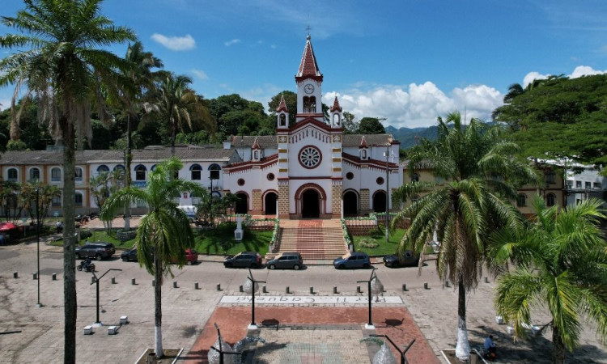

Florencia

Florencia, la puerta de entrada a la Amazonía colombiana. Esta ciudad, rodeada de exuberante vegetación, te invita a explorar la cultura local y la riqueza natural de la región. Disfruta de la tranquilidad de sus parques, visita el Malecón y déjate sorprender por la belleza del río Caquetá. Florencia es el punto de partida ideal para aventurarte en los diferentes ecosistemas de la región y descubrir la diversidad de flora y fauna.